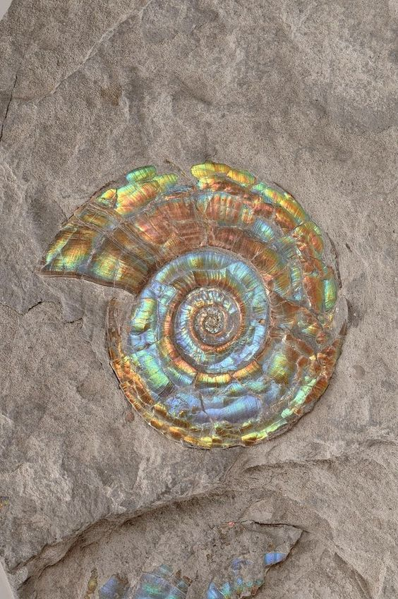

A seashell or sea shell, also known simply as a shell, is a hard, protective outer layer usually created by an animal or organism that lives in the sea. Most seashells are made by mollusks, such as snails, clams, and oysters to protect their soft insides.[1] Empty seashells are often found washed up on beaches by beachcombers. The shells are empty because the animal has died and the soft parts have decomposed or been eaten by another animal. A seashell is usually the exoskeleton of an invertebrate (an animal without a backbone), and is typically composed of calcium carbonate[1] or chitin. Most shells that are found on beaches are the shells of marine mollusks, partly because these shells are usually made of calcium carbonate, and endure better than shells made of chitin. Seashells have been used by humans for many different purposes throughout history and prehistory. However, seashells are not the only kind of shells; in various habitats, there are shells from freshwater animals such as freshwater mussels and freshwater snails, and shells of land snails.
- different seaschells
- different species
- different locations
